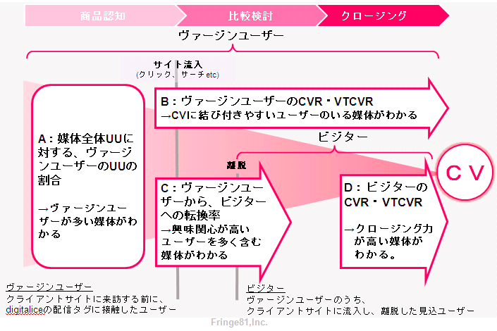

報道関係各位
2012年10月22日
Fringe81株式会社
Fringe81、第三者配信アドサーバー「digitalice」の計測機能を大幅拡張
～ヴァージンユーザー、マルチパラメータ、レコメンデーションバナー計測、 アドベリフィケーションに対応～
Fringe81株式会社（本社：東京都渋谷区、代表取締役 社長:田中 弦、社名よみ仮名：フリンジ ハチイチ）は、自社開発の第三者配信アドサーバー「digitalice（デジタリス）」（http://www.digitalice.jp）の計測機能の大幅拡張を行いました。
新たに、クライアントサイトへ訪問していないユーザーが多い媒体を把握できる「ヴァージンユーザー」計測機能、コンバージョンしたユーザーにCRMデータを紐付けることが可能な「マルチパラメータ」付与機能、ならびに各種登場しているレコメンデーションバナーのビュースルー効果計測機能、広告掲載先媒体の精査が可能な「アドベリフィケーション」対応機能など、多数の機能をリリースしました。
【追加機能の詳細】
[1]ヴァージンユーザー計測機能（図１参照）
ヴァージンユーザーとは、広告主サイト内に導入された「digitalice計測タグ」に接触する前（=サイトへ訪問する前）に広告掲載サイトで配信される「digitalice配信タグ」に触れたユーザーを指します。本機能により、今まで実現が困難であった、広告主にとって未接触の新規ユーザーを発見することが可能となります。つまり、広告主はdigitaliceを活用することにより、まだサイトへ訪問していないユーザーのインプレッション/クリック/ビュースルーサーチ※１が多い媒体を把握可能となり、このような媒体への出稿を行うことで、安心して新規ユーザーのサイト訪問数を増加させることが可能となります。[2]マルチパラメータ付与機能
コンバージョンしたユーザー毎のCRMデータ(売上金額・購入点数・性別など)と、第三者配信アドサーバーとデータを連携することで、統合データ管理を実現しました。これにより、コンバージョンしたユーザーのCRMデータごとに閲覧していた媒体をさかのぼって分析するなど、より精緻なアトリビューション分析を行うことが可能です。この結果、広告主は、売上高が大きいユーザーの獲得効率が良いオーディエンスターゲティングメニューや、クリエイティブを見つけ出し、よりビジネスに直結したメディアプランニングを行うことができます。[3]レコメンデーションバナー計測機能
現在多数の事業者が参入している、レコメンデーションバナーを用いたリターゲティング広告。digitaliceは、レコメンデーションバナーのビュースルーコンバージョン数やビュースルーサーチ数を計測可能としました。これにより、複数のレコメンデーションバナーの効果比較や、他の広告手法との統一された効果計測が実現します。リコメンデーションバナー間の重複コンバージョンの排除により、正しく効果を評価します。現在大手2社のリコメンデーションバナーに対応し、今後も対応社数を増加させていきます。[4]アドベリフィケーション連携機能
広告主のブランド価値を毀損させるような媒体に広告が表示されていないか、広告がユーザーに明確に閲覧されているかを把握できるツール、アドベリフィケーション。digitaliceはパートナーと提携することにより、アドベリフィケーションにも対応しました。digitaliceは今後も、Fringe81のミッション「新しい発見を提供し、物事の見方を変える。」を実現するために、開発を進めて参ります。

【図1】ヴァージンユーザー計測
※1ビュースルーサーチとは、バナー広告閲覧後に、検索行動を行った数となります。
■このプレスリリースに関するお問い合わせ
Fringe81株式会社 digitalice事業担当 ：佐藤 池田
Tel: 03-6869-8100 Email: info@fringe81.com
Fringe81株式会社 digitalice事業担当 ：佐藤 池田
Tel: 03-6869-8100 Email: info@fringe81.com